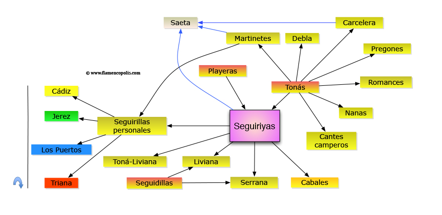
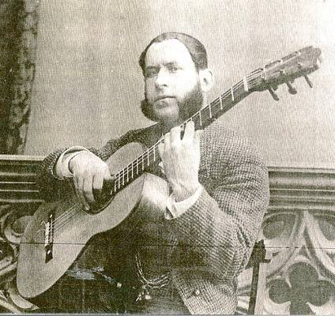
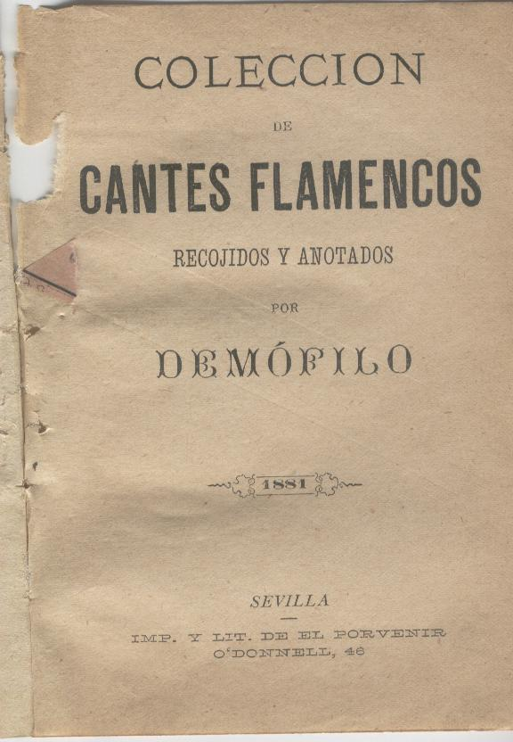

Se conocieron con el nombre de playeras en la primera mitad del siglo XIX, después como seguidillas gitanas. Algunos estudiosos apuntan que playera no viene de playa sino de plañidera, mujeres que hacían sus cantos de velorio contratadas para tal menester.
  Para el musicólogo Manuel García Matos la similitud de esta copla con la endecha, y sabiendo que esta era cantada por las plañideras durante los duelos, se deduce que las primeras seguiriyas eran plañideras y no playeras, con el tema de la muerte como fuente de inspiración, como cante de duelo. Debido a que muchas de las endecheras eran gitanas, de ahí posiblemente el origen de las seguidillas gitanas, denominación que aparece recogida en numerosas tonadillas del XVIII aunque esta no coincide en absoluto con la seguiriya flamenca.
Diversos autores han venido poniendo en cuarentena la relación directa entre playeras y seguiriyas, sugiriendo que en realidad el término playera se utilizó como genérico de cante jondo. Así lo creía Pepe el de la Matrona cuando afirmaba que en los finales del siglo XIX se estilaba la fórmula ‘échate una playera’ para solicitarle a alguien que cantase flamenco; no, de forma específica, por seguiriyas. No en vano el conjunto del cante jondo es un cante llorado, plañido. Sin embargo algunas partituras de playeras que se encuentran en la BNE tienen una rítmica que hoy podemos considerar paradigmática de la seguiriya.
El género atrajo a creadores de formación académica, pues conocemos playeras compuestas por Enrique Granados, Pablo Sarasate, Ruperto Chapí, Oscar Esplá o Graciano Tarragó.
Hoy se conoce como seguiriya / seguiriyas / siguiriya / seguirilla / siguerilla. La seguiriya gitana o seguiriya del sentimiento, nombre que recibió antaño, es la quintaesencia de la jondura; un estilo melismático y de carácter muy dramático. La mejor pauta que nos va a sugerir que estamos ante un cante por seguiriyas es la melodía melismática apoyada en una extensa gama de quejíos, de sucesivos ‘ayes’. El origen de este cante, con su característica aliteración de ‘ayes’-, ha traído de cabeza a los musicólogos que han intentado su notación musical.
Manuel de Falla en su estudio ‘El Cante Jondo’ dice escuchar en la siguiriya los modos tonales primitivos del canto litúrgico bizantino y la ausencia de ritmo métrico en la linea melódica, elementos asimilados por los gitanos granadinos de extramuros en el siglo XV. Según García Matos proviene de la seguidilla castellana, encontrando un antecedente en una ópera de 1820 ‘La máscara afortunada’ donde en el número titulado ‘Las playeras’ aparecen coplas con la métrica de la siguiriya.
Manuel de Falla en su estudio ‘El Cante Jondo’ dice escuchar en la siguiriya los modos tonales primitivos del canto litúrgico bizantino y la ausencia de ritmo métrico en la linea melódica, elementos asimilados por los gitanos granadinos de extramuros en el siglo XV. Según García Matos proviene de la seguidilla castellana, encontrando un antecedente en una ópera de 1820 ‘La máscara afortunada’ donde en el número titulado ‘Las playeras’ aparecen coplas con la métrica de la siguiriya.
Aparte de los ya citados, destacamos como creadores e intérpretes de siguiriyas a los cantaores:
Aunque depende de cada versión, podemos considerar que la estructura que adoptan una tanda por seguiriyas sigue un esquemas más o menos como este: